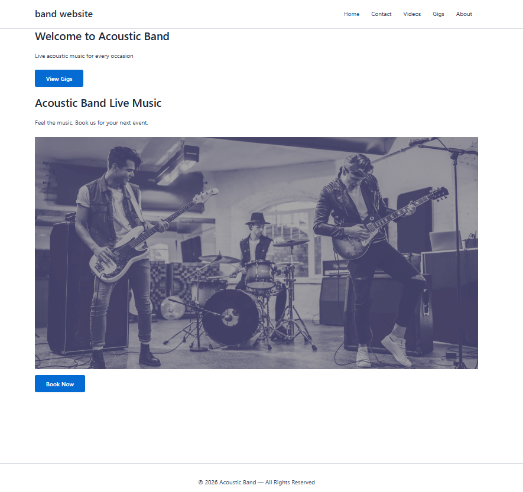
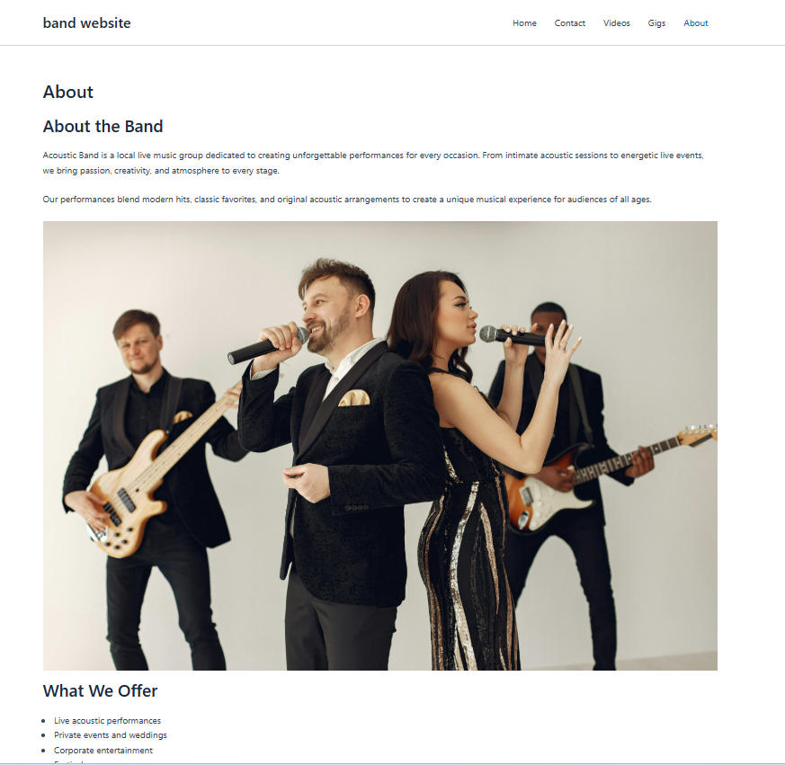
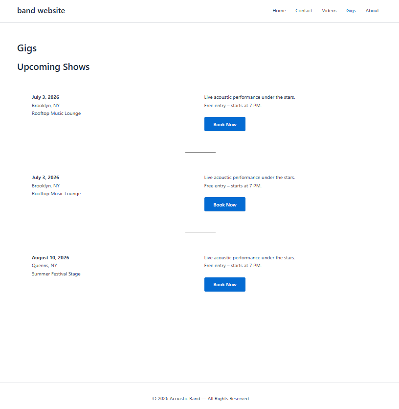
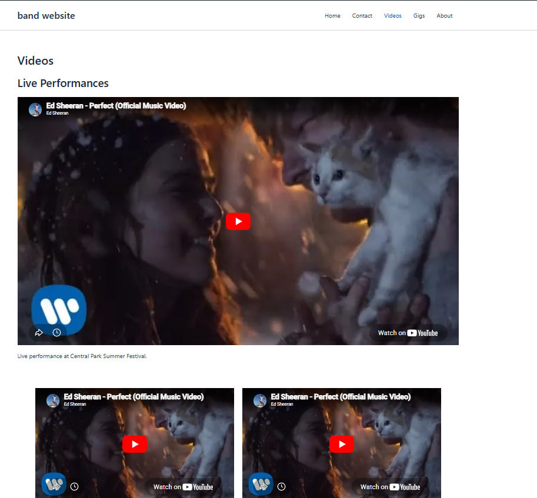
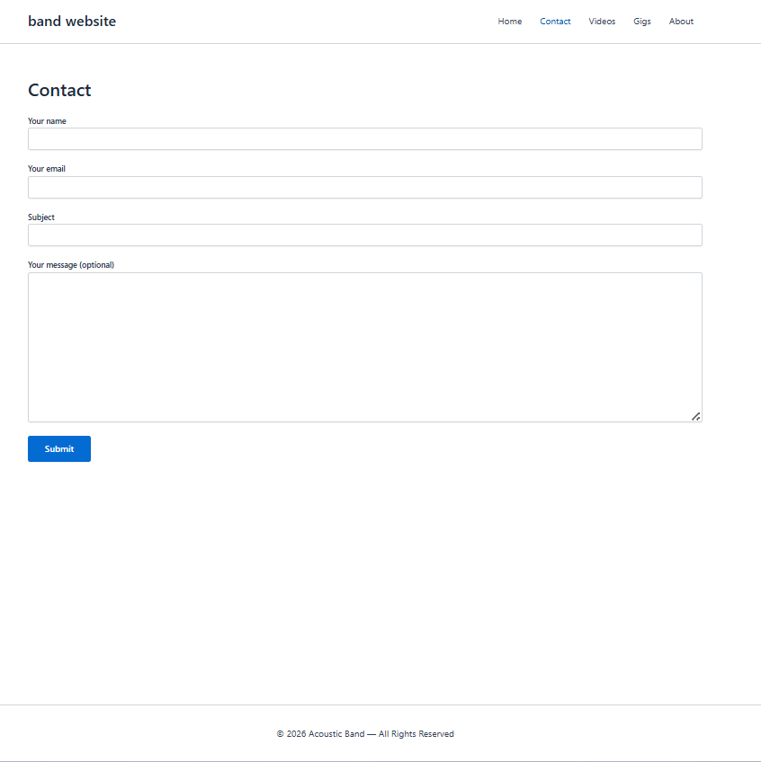

Responsive WordPress website designed for a local acoustic band.
View Backend ProjectThis project was created using WordPress and the Astra Theme to build a modern and responsive website for a local acoustic band.
The website includes pages for upcoming gigs, embedded videos, contact forms, social media links, and responsive layouts.




